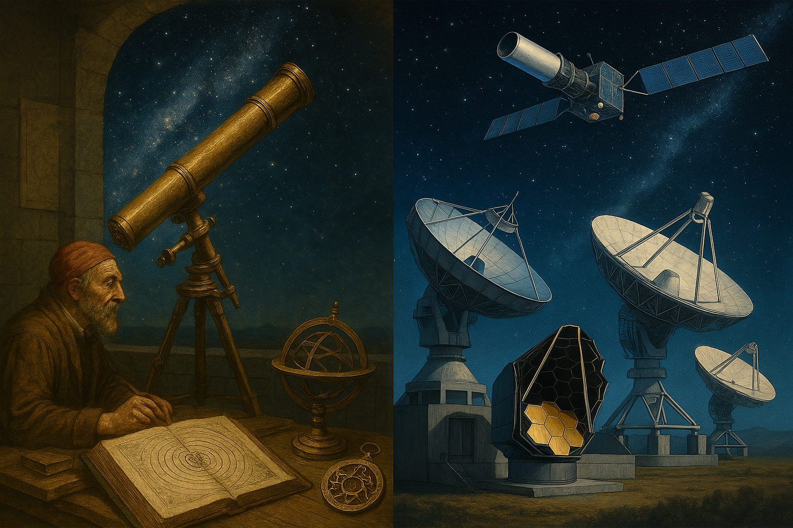
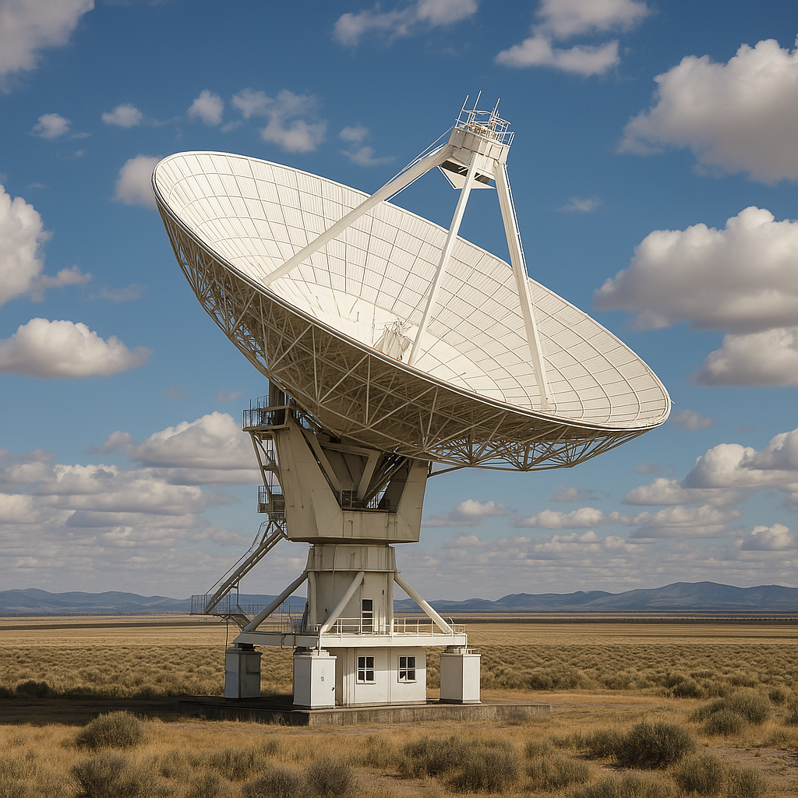
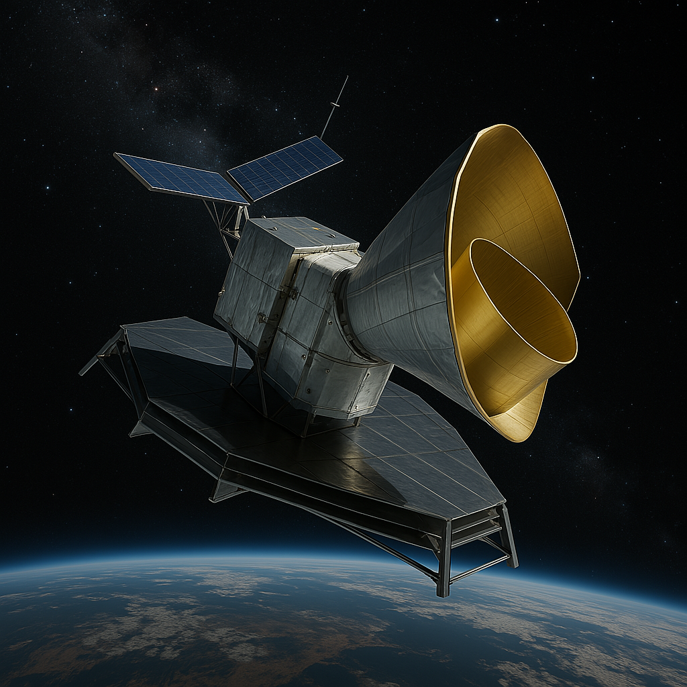
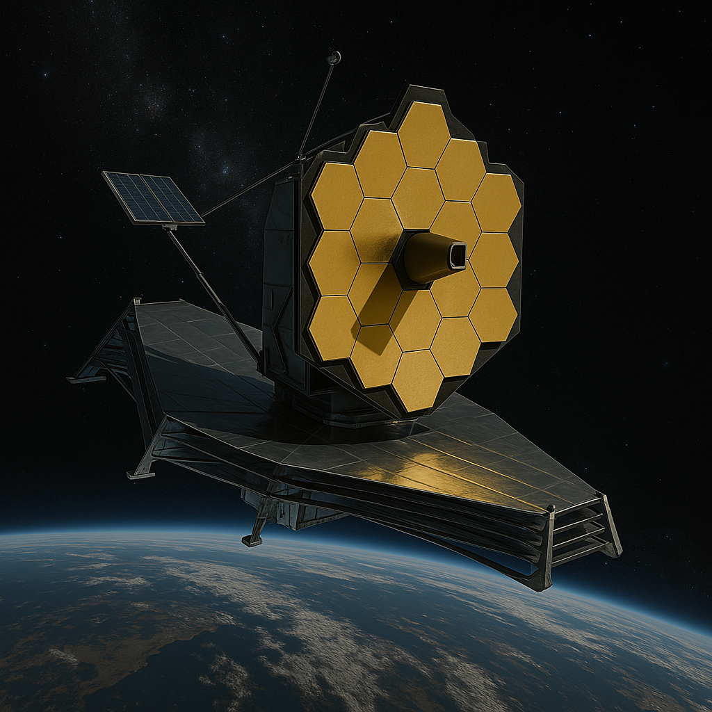
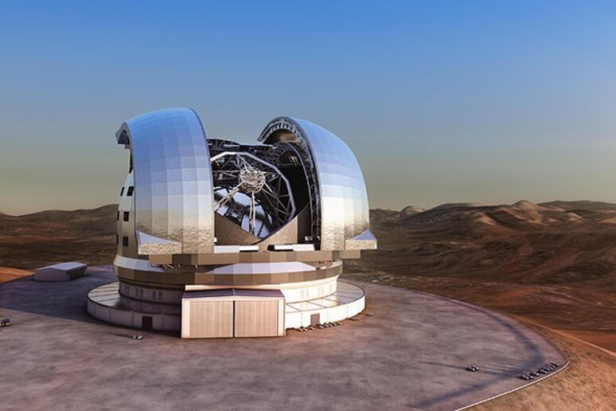
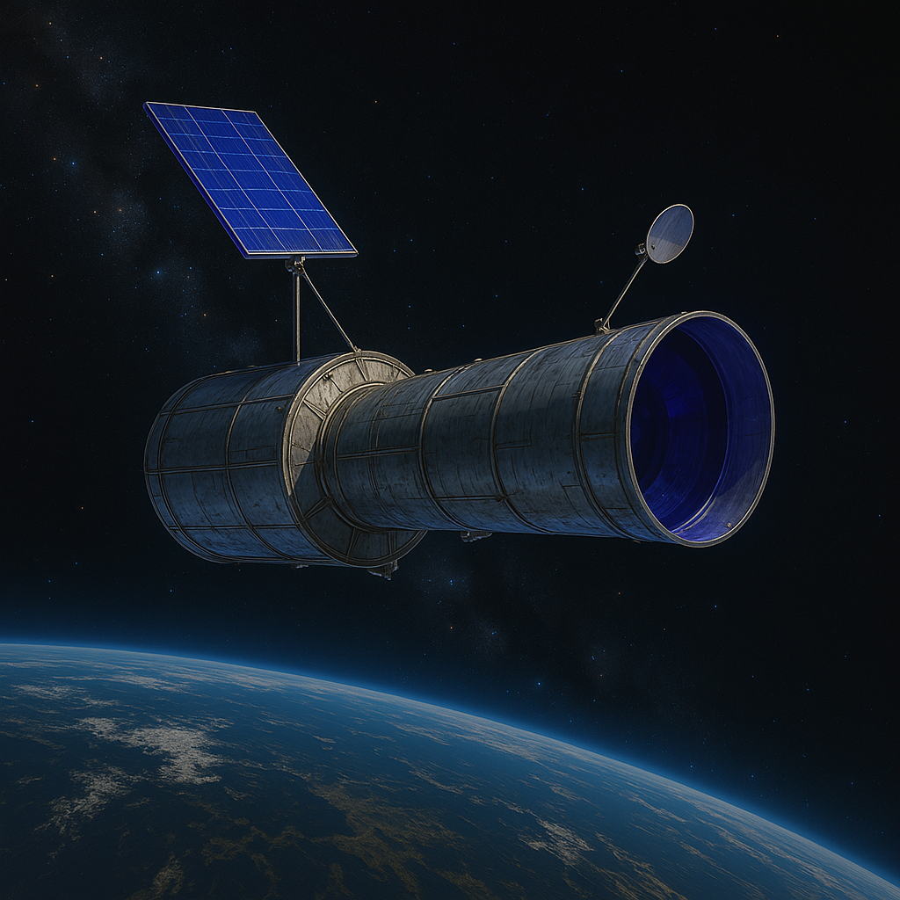
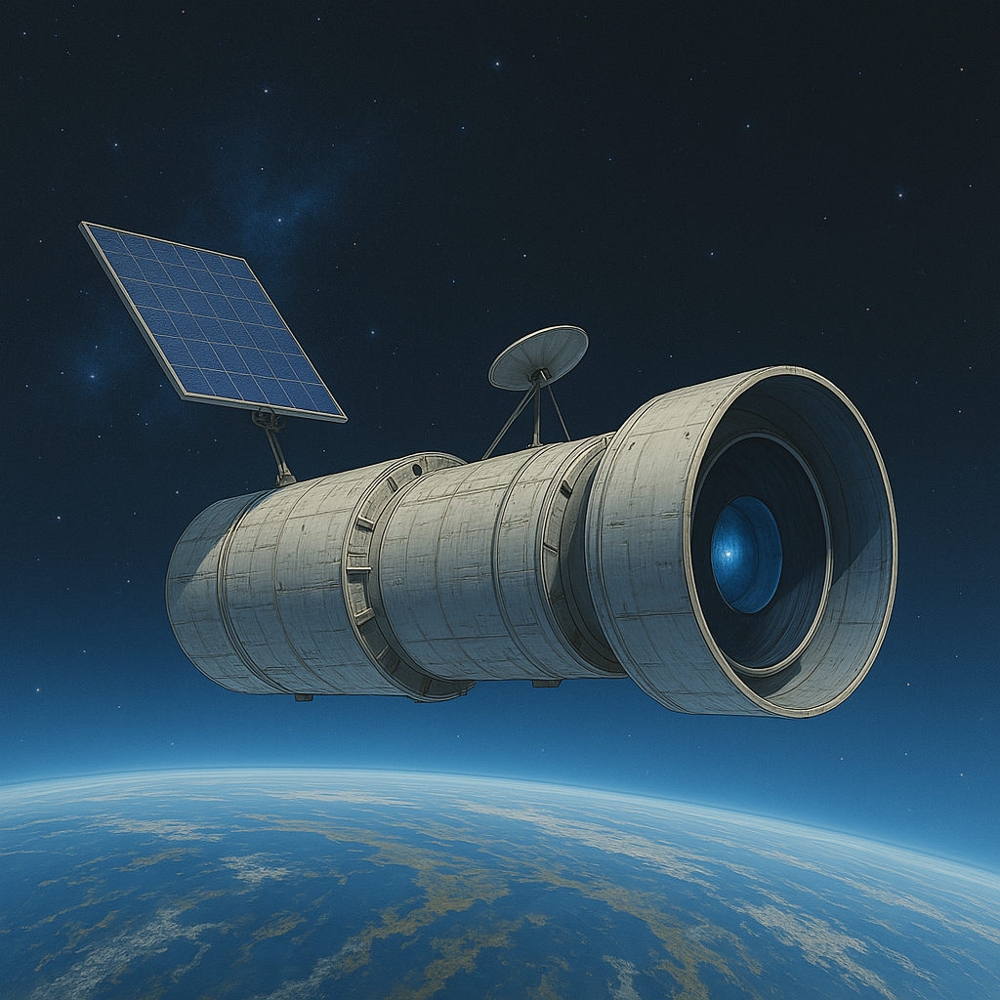
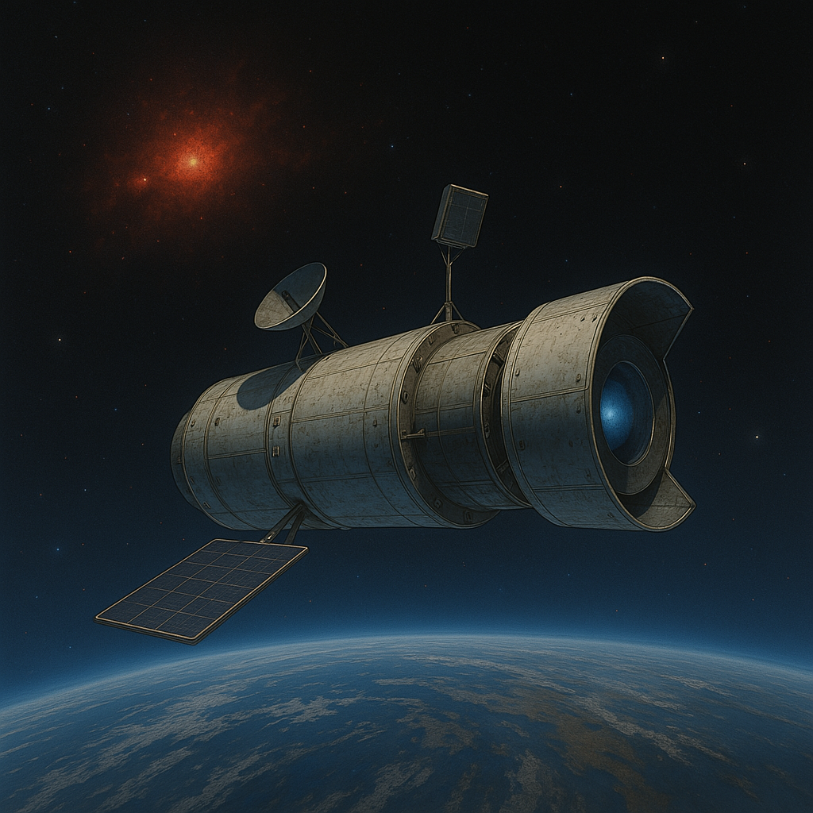

✦ Spazio1999 — Blog ✦

L'astronomia osservativa è la branca della scienza astronomica che studia il cielo mediante l'analisi dei segnali provenienti dallo spazio,
come la luce visibile, le onde radio e le radiazioni ad alta energia. Dalle osservazioni a occhio nudo dell'antichità
ai moderni osservatori spaziali, questa disciplina ha trasformato radicalmente la nostra visione dell'universo.
Ogni tipo di radiazione fornisce informazioni diverse sugli oggetti celesti. Per questo l'astronomia moderna si è specializzata
in più settori osservativi, ciascuno con strumenti dedicati, sia da terra che nello spazio.

Studia l'universo attraverso le onde radio emesse da oggetti come quasar, pulsar, galassie attive e resti di supernovae. Grazie a enormi radiotelescopi (es. FAST, VLA), è possibile osservare fenomeni invisibili alla luce visibile, come la struttura della Via Lattea o le nubi di idrogeno interstellare.

Analizza la Radiazione Cosmica di Fondo (CMB), un residuo dell'universo primordiale. Satelliti come COBE, WMAP e Planck hanno mappato le minuscole variazioni della temperatura cosmica, aiutando a comprendere l'origine e la struttura dell'universo.

Permette di osservare oggetti celesti nascosti dalle polveri cosmiche, come stelle in formazione e dischi protoplanetari. Telescopi come Spitzer e James Webb esplorano l'universo in questa banda, rivelando galassie lontane e fredde che non emettono luce visibile.

È la forma tradizionale di osservazione astronomica. Utilizza la luce visibile per analizzare stelle, pianeti, galassie e nebulose. I telescopi terrestri e spaziali, come Hubble, hanno permesso scoperte cruciali sulla struttura dell'universo e sull'evoluzione delle stelle.

Indaga stelle giovani e calde, resti di supernovae e regioni ionizzate. La radiazione UV viene assorbita dall'atmosfera, perciò è osservata tramite telescopi spaziali come Hubble e GALEX. Rende possibile lo studio delle fasi più dinamiche della vita stellare.

Esamina oggetti estremamente energetici come buchi neri, stelle di neutroni e ammassi di galassie. I raggi X non raggiungono la superficie terrestre, quindi vengono osservati con telescopi in orbita come Chandra e XMM-Newton.

È la più energetica tra tutte le bande. Studia lampi gamma, buchi neri in fusione, eventi cosmici estremi. I telescopi Fermi e MAGIC rilevano queste emissioni dallo spazio o da alte quote terrestri.
A rifrazione e riflessione, amplificano la luce visibile. Installati in zone secche e buie, come il deserto di Atacama o le Hawaii.
Enormi parabole che captano onde radio. Operano in gruppo per formare interferometri e ottenere immagini dettagliate.
Analizzano la luce in ogni lunghezza d'onda per determinare la composizione, temperatura e velocità degli oggetti celesti.
Sensori elettronici che catturano immagini astronomiche digitali con alta sensibilità e basso rumore.
Telescopi in orbita come Hubble, James Webb, Chandra, Fermi. Rivelano bande di radiazione assorbite dall'atmosfera.
Combinano più antenne o telescopi per aumentare la risoluzione. Essenziali in radioastronomia e osservazioni millimetriche.